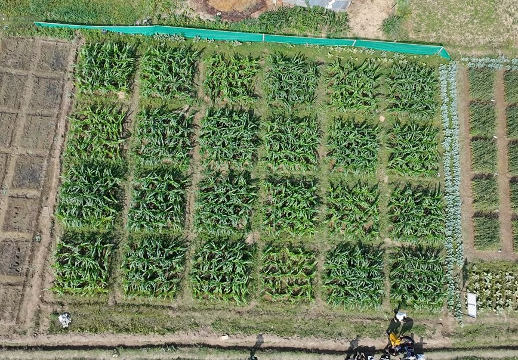
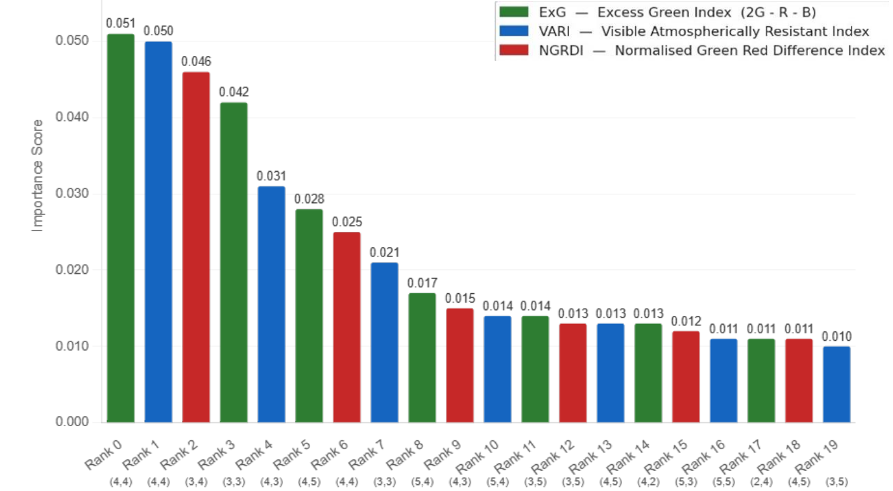
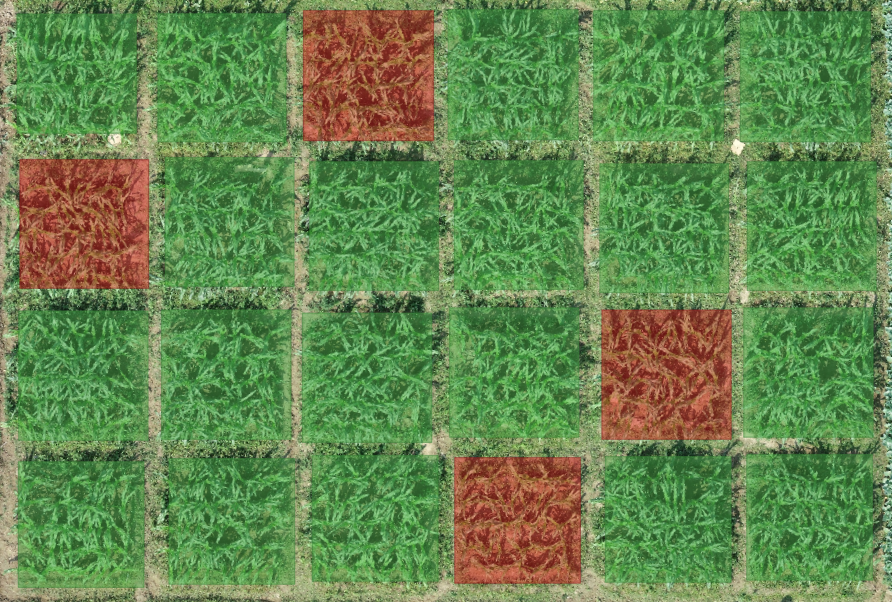
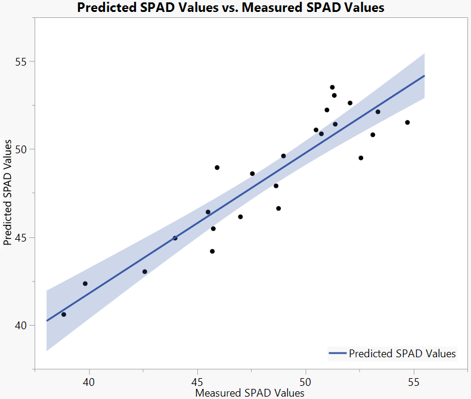
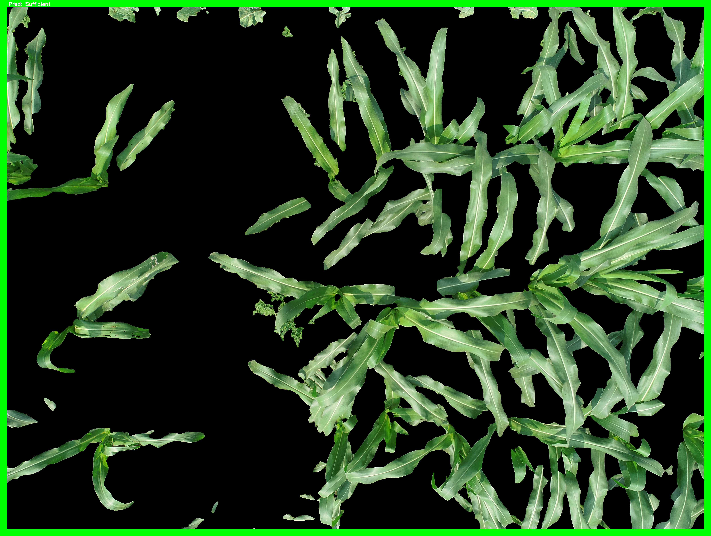
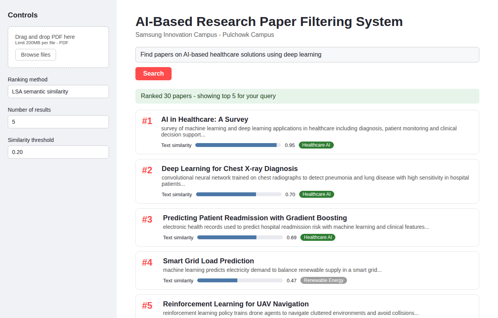
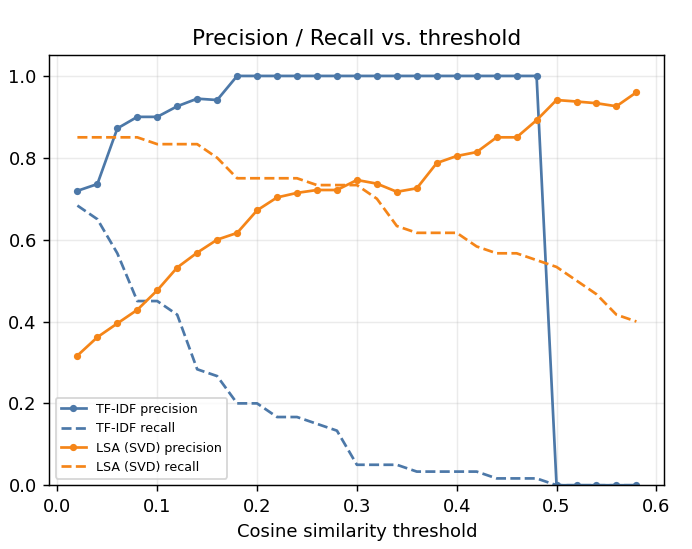
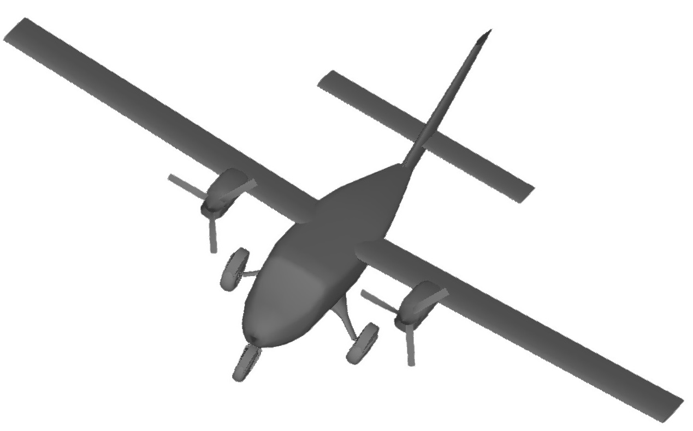
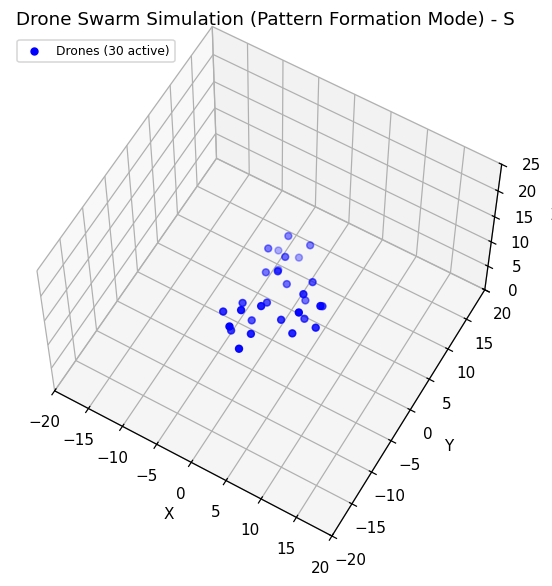
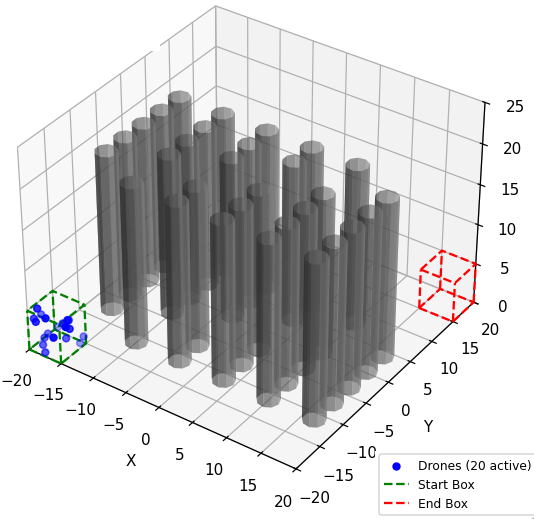

Take a look at my projects, from my final-year research to AI applications and aircraft design.
Each one shares what I worked on, how I approached it, the tools I used,
and what I learned along the way.
Completed

Main Project · Final Year Thesis
UAV-Based Crop Health Monitoring Using RGB Based Imaging
A UAV-based system that uses RGB aerial images to identify potentially nutrient-deficient maize,
achieving high classification accuracy without the need for costly multispectral sensors.
A web-based AI tool that helps researchers find relevant academic papers by
filtering and ranking literature using OCR, computer vision, and transformer-based language models,
making the research process more focused and efficient.
Aerombulance ‐ Ambulance Aircraft for Medical Operations
A conceptual STOL aircraft designed to transport patients quickly from remote areas with short runways,
featuring a PT6A-20 turboprop engine and a modular medical cabin for patient and neonatal care.
A Python-based 3D simulation of how several drones fly together as a swarm — keeping their distance,
aligning their movement and staying together while avoiding obstacles and heading for a goal.
PythonNumPyMatplotlibMulti-Agent SimulationPID Control
Other Projects
Shorter projects and club work that fed directly into the featured research above –
drone hardware, simulation, and applied computer vision.
Planned and conducted autonomous drone flights for aerial mapping
Captured aerial images with approximately 70–80% overlap for accurate image stitching
Processed aerial imagery in DroneDeploy to generate orthomosaic maps
Evaluated image coverage, overlap, and orthomosaic quality for mapping applications
Completed
Drone Assembly and Stability Check
Mission Planner, QGroundControl
Assembled the drone and checked component connections.
Configured the flight controller and checked sensor readings.
Performed stability checks and test flights to ensure safe operation.
Completed
Autonomous UAV Navigation using GPS and Pixhawk
Fixed-wing RC aircraft build
Designed and fabricated an RC fixed-wing aircraft for flight testing
Integrated propulsion, control surfaces, and radio communication systems
Conducted flight tests and evaluated stability and control performance
Real Time Face Detection on Tello Drone
Tools: Python, OpenCV, DJI Tello SDK
Developed a real-time face detection system using OpenCV and Python
Integrated the system with the DJI Tello video stream
Tested live face detection during drone flights
Main Project · Final Year Thesis
UAV-Based Crop Health Monitoring Using RGB Based Imaging
Final Year Project · B.E. Aerospace Engineering · Pulchowk Campus, IOE · Aug 2025 – Mar 2026
Team · Basant Karki, Bishal Marasini, Prabin Baniya, Sameer Baskota
Overview
The question behind this thesis was simple: is a standard RGB camera on an off-the-shelf drone enough to tell how
well a maize crop is getting its nitrogen? A DJI Phantom 4 Pro V2.0 was flown over experimental maize plots at IAAS
Rampur Campus, Chitwan. The acquired images were processed into orthomosaic maps, from which six vegetation indices
were derived and evaluated against 240 in-situ SPAD chlorophyll measurements.
A Python-based image processing pipeline was developed to separate crop canopy from soil, followed by a
Random Forest classifier to categorize maize canopy into nutrient-sufficient and nutrient-deficient
classes. The workflow integrated UAV flight planning, aerial image acquisition, orthomosaic generation,
vegetation index analysis, and machine learning to produce spatial maps of potential nutrient deficiencies.
Objective
To develop a cost-effective UAV-based system for maize crop health assessment by integrating RGB
aerial imagery, vegetation indices, and machine learning to identify nutrient-related stress without
requiring expensive multispectral or hyperspectral sensors.
Background
Maize is Nepal'ssecond most important staple crop after rice, contributing to food security and rural livelihoods,
particularly among smallholder farmers. However, yields remain below global levels, partly due to imbalanced
or inadequate nutrient management.
Field studies have established that maize growth and yield vary with nutrient source and fertilizer
composition, with treatment effects commonly evaluated using analysis of variance (ANOVA) and regression.
Visible-band vegetation indices, including VARI, GLI, TGI, and NGRDI, offer a non-destructive approach
to assessing crop vigour from canopy colour. However, their application to maize grown under different
nutrient management regimes remains limited in the Nepalese context.
In everyday farming, plant health is still judged by eye. That tends to miss early deficiencies and
makes it hard to fertilize at the right rate. This project tries to close the gap by pairing statistics
with image-based indices, so that how maize responds to different nutrient treatments is measured rather
than guessed.
Problem Statement
Manual field scouting for maize nutrient stress is labour-intensive and difficult to scale, while
multispectral and hyperspectral imaging systems remain expensive for many farmers in Nepal.
This study evaluates the use of UAV-acquired RGB imagery, vegetation indices, and machine learning
to develop a cost-effective approach for assessing maize crop health and mapping potential
nutrient-related stress at the field level.
Where It Can Be Used
Enables early identification of potential nutrient deficiencies in maize.
Supports site-specific fertilizer application to improve nutrient-use efficiency and crop productivity.
Cutting survey labour and cost, since a drone replaces walking the whole field
Provides spatial crop health data to support agricultural extension services and evidence-based decision-making.
Offers a scalable workflow adaptable to other crops and geographical regions.
Methodology
RGB images captured by a DJI Phantom 4 Pro V2.0 were stitched into a georeferenced
orthomosaic map . Six vegetation indices ExG, GLI, NGRDI, and VARI
were calculated to assess maize canopy health and examine their relationship with SPAD-based
chlorophyll measurements. Statistical analysis, including correlation and regression, was used to
study these relationships. A Random Forest classifier was also developed using RGB-derived
features to identify nutrient-deficient and sufficient maize plants, enabling crop health assessment
without expensive multispectral sensors.
Field Experiments
Field experiments were conducted across 24 maize plots comprising six nitrogen treatments and
four replications. RGB imagery was acquired using a DJI Phantom 4 Pro V2.0, and 240 SPAD readings
were collected to assess leaf chlorophyll content. These measurements were used to evaluate crop
responses to different nutrient treatments and investigate the relationship between RGB-derived
vegetation indices and maize health.
Study Area and Experimental Design
The trial was prepared together with the Nepal Agricultural Research Council (NARC) at the research
farm of IAAS Rampur Campus in Chitwan (about 213 m above sea level), where the subtropical climate suits maize.
The land was ploughed repeatedly to get a fine, even seedbed, cleared of weeds and crop residue, levelled and
enriched with well-decomposed farmyard manure.
A Randomized Complete Block Design (RCBD) was used: six treatments, four replications and 24 plots of 3 m × 3 m,
with 1 m between plots and blocks. Crop spacing was 60 cm × 25 cm. Randomizing treatments within blocks makes it
possible to separate the effect of a treatment from natural variation in the field, such as differences in soil.
Rampur Hybrid-12 maize was sown at two seeds per hill and thinned to one plant at the V2 stage, and every plot
received the same management apart from its treatment.
The recommended dose was 180:60:60 kg N:P2O5:K2O per hectare. Nitrogen came from urea:
one third (60 kg/ha) went on as a basal dose and the other two thirds (120 kg/ha) were split equally between the
knee-height and tasseling stages. The six treatments, where RDN means the recommended dose of nitrogen, were:
T1: control, no nutrient applied
T2: 100% RDN through urea
T3: 100% RDN through urea plus biochar (1 t/ha)
T4: 100% RDN through urea-enriched biochar
T5: 50% RDN through urea and 50% N through cattle-urine-enriched biochar
T6: 50% RDN through urea and 50% N through human-urine-enriched biochar
Equipment and Software
The hardware setup included a DJI Phantom 4 Pro V2.0, a SPAD chlorophyll meter for ground-truth
measurements, a tablet for flight operations, high-speed SD cards, a multi-battery charging hub, and
a workstation for image processing.
The Phantom 4 Pro V2.0 was selected for its high-resolution RGB camera and OcuSync video
transmission. It has a take-off weight of 1,375 g, an approximate flight time of 30 minutes,
and a 5,870 mAh battery. Its 20 MP, 1-inch CMOS sensor features an 84° field of view, an 8.8 mm lens,
an f/2.8 – f/11 aperture, and a mechanical shutter. The camera is mounted on a three-axis gimbal,
while GPS and GLONASS support positioning.
The software workflow used DroneDeploy for flight planning and orthomosaic generation,
DJI GO 4 for flight and camera control, QGIS for vegetation index calculation, canopy masking,
and zonal statistics, and Python for image segmentation and machine learning classification.
Excel was used to manage SPAD measurements, while JMP Pro supported statistical analysis.
Flight Preparation and Calibration
The drone came through a collaboration with GeoKrishi, a precision-agriculture organization in Nepal. Before any
mapping flight, the team practised at an open test site, moving from manual flying in different wind and light
conditions to waypoint and fully autonomous missions. Practice also covered pre-flight checklists, reading
telemetry (battery, altitude, GPS signal) and emergency drills such as return-to-home, forced landing and signal
loss.
Before every mission the propellers, gimbal, speed controllers, battery and airframe were inspected, the lens was
cleaned, exposure was set for the light of the day and white balance was fixed so colours stay consistent across all
images. The compass and IMU were calibrated and the GPS lock checked before each take-off.
Mission Planning and Data Collection
Every mission was planned in DroneDeploy and adjusted to the field's size and shape, nearby obstacles and the
weather. The drone flew a back-and-forth pattern, like mowing a lawn, so the whole field was covered evenly without
manual control. Front and side overlap were both set to 80%, which gives plenty of redundant data for accurate 3D
models and seamless orthomosaics. Flights were scheduled around midday, when shadows are shortest and brightness is
most consistent.
The drone held a steady altitude, speed and heading while its 20 MP camera took pictures at timed intervals. Each
photo stored its GPS position and a UTC timestamp in the EXIF data, so the images were georeferenced without ground
control points. Because several sites of different sizes were flown, the altitude was adjusted per site to keep
image quality and resolution consistent.
Orthomosaic Generation
After each flight, the image sets that passed a quality check were processed in DroneDeploy. The software aligned
the photos and found tie points using structure from motion, rebuilt a dense 3D point cloud with multi-view stereo
and produced a digital surface model of the field. The orthomosaic was then made by projecting and stitching all the
images onto one ground plane, correcting for lens distortion, terrain and perspective.
Each orthomosaic was exported as a four-band GeoTIFF in UTM Zone 45N (EPSG:32645) and used for all later work in
QGIS. Ground resolution is about 2–3 cm per pixel, and the mapped area is roughly 1,882 m².
Separating Canopy from Soil
Two routes were used to keep only maize pixels. The first is a multi-evidence pipeline written in Python with OpenCV
for images shot from about three metres, built to cope with changing outdoor light and with weeds that look like
maize. Instead of a single threshold it combines four kinds of evidence:
Vegetation indices: a pixel is kept only when at least two of three indices (ExG, VARI, GLI) pass their thresholds, which removes false positives such as wet soil
HSV colour gate: hues from 22 to 88 with a minimum saturation of 35 and minimum value of 90, which drops grey soil and dark shadows
Texture: the standard deviation of grayscale intensity in a 15 × 15 window, because maize leaves are smoother than grass and soil
CIE L*a*b* chromaticity: an extra colour check that is less sensitive to lighting
The result is refined with GrabCut and saved as a binary mask plus a colour image in which everything except maize
is black.
The second route is the QGIS workflow used for the field maps. Normalized Excess Green was calculated with the
Raster Calculator and thresholded at zero to make a vegetation mask, the mask was cleaned with the Sieve tool
(minimum cluster of 5 to 10 pixels), and the orthomosaic was clipped to it. Only canopy pixels remain, everything
else becomes NoData, so soil never leaks into the index values.
Vegetation Indices
Six RGB indices, chosen after a literature review, were calculated in QGIS on the masked canopy (R, G and B are the
red, green and blue values; a tiny constant of 0.0001 was added to denominators to avoid division by zero):
ExG = 2G − R − B (normalized: (2G − R − B) / (R + G + B))
GLI = (2G − R − B) / (2G + R + B)
NGRDI = (G − R) / (G + R)
VARI = (G − R) / (G + R − B)
TGI = G − 0.39R − 0.61B
NPCI (RGB approximation) = (R − B) / (R + B)
NPCI was originally defined with hyperspectral bands, so the broadband red and blue channels stand in for them here.
It behaves the opposite way to the greenness indices: a higher value means more carotenoid relative to chlorophyll,
which points to nitrogen stress. Each index layer was shown with a red-yellow-green colour ramp, so stressed or bare
areas look red and dense, healthy canopy looks green.
The 24 plot boundaries were loaded as a GeoPackage layer in the same coordinate system, and each plot was also split
into 16 subplots to make patterns easier to see. The mean of each index per plot was extracted with Zonal Statistics,
exported as CSV, joined with the SPAD readings in Excel and passed to JMP Pro for analysis.
Statistical Analysis
The ground truth is 240 SPAD readings: 10 for each of the 24 plots. One-way ANOVA at the 0.05 level tested whether
the treatments differ in chlorophyll content, after checking normality and equal variance. Pearson correlation and
linear regression compared SPAD with each index, and prediction accuracy was measured with RMSE and normalized RMSE.
All of this was done in JMP Pro.
Several RGB indices are strongly correlated with one another, so an Adaptive Lasso regression with K-fold validation
was also fitted to pick the most useful predictors automatically. The Random Forest classifier used four indices
(ExG, VARI, NGRDI and GLI) per pixel, an 80/20 train and test split, and 500 trees with balanced class weights.
Machine Learning Workflow
The workflow started with RGB images captured using a DJI Phantom 4 Pro V2.0,
which were stitched into a georeferenced orthomosaic map of the maize field.
Python and OpenCV were used to separate maize vegetation from the background through colour thresholding,
vegetation indices, texture filtering, and GrabCut segmentation. Four vegetation indices ExG, VARI,
NGRDI, and GLI were extracted as features for a Random Forest classifier trained
to classify maize samples as nutrient-sufficient or nutrient-deficient. The dataset was split into 80%
training data and 20% testing data, and the model was evaluated using accuracy, precision, recall, F1-score,
and a confusion matrix. It achieved 91.6% accuracy and 94.7% recall for
the deficient class. For spatial mapping, new images were divided into 30 x 30 pixel tiles,
and the predictions were combined to estimate overall crop health. The project also explored spatial
patterns using an 8 x 8 grid-based feature analysis. Alongside classification, SPAD chlorophyll readings
were compared with six vegetation indices ExG, GLI, NGRDI, VARI, TGI, and NPCI using
correlation analysis, linear regression, ANOVA, and Adaptive Lasso regression to investigate how RGB
imagery could help assess maize chlorophyll status.
Tools Used
DJI Phantom 4PythonOpenCVScikit-learn (Random Forest)QGISVegitation Indices : ExG, GLI, NGRDI and VARI DroneDeploy
Results
Achieved 91.6% accuracy in classifying nutrient-deficient and nutrient-sufficient maize samples.
Analysed the relationship between RGB vegetation indices and SPAD-based chlorophyll readings.
Mapped crop-health patterns using image segmentation, grid-based analysis, and tile-level predictions.
Demonstrated how affordable RGB drone imagery and machine learning can support crop-health monitoring without multispectral sensors.
Results: Effect of Treatments on Chlorophyll
Treatment had an extremely significant effect on SPAD (F = 24.30, p < 0.0001). The control (T1) had the lowest mean
SPAD at 41.64, and the highest values came from the full nitrogen doses: 49.60 for T3 (100% RDN plus biochar) and
49.51 for T2 (100% RDN). Urea-enriched biochar (T4) reached 49.27, statistically comparable to the full urea
treatments, which suggests biochar enrichment is an effective way to deliver nitrogen. The urine-enriched treatments
sat in the middle, with 47.19 for T6 (human urine) and 46.51 for T5 (cattle urine).
An ANOVA across the four replications showed no significant difference between blocks (p = 0.7951), confirming that
variation between blocks was well controlled.
Results: Vegetation Indices against SPAD
To see whether low-cost imagery can monitor maize, each index was correlated with SPAD (n = 24). NPCI had the
strongest relationship, a negative one (r = −0.736, R2 = 0.54), which fits the idea that more carotenoid
relative to chlorophyll goes with lower chlorophyll. VARI was strongly positive (r = 0.730, R2 = 0.53) and TGI
strongly negative (r = −0.726, R2 = 0.53). NGRDI was also strong and positive (r = 0.702), while GLI was weak and
not significant (r = 0.392, p = 0.058). All the strong correlations had p below 0.001.
Results: Predicting SPAD from Imagery
VARI and NGRDI are almost the same signal (r = 0.987), so a plain single-index regression undersells the data. The
Adaptive Lasso kept TGI, NGRDI and NPCI and dropped VARI and GLI. TGI turned out to be the most important predictor
(Wald χ2 = 18.22, p < 0.0001), which the team links to the way chlorophyll deepens red absorption. The final model for
estimating SPAD without touching the plant is:
On both the training set (n = 20) and the independent validation set (n = 4), the points sit close to the 1:1 line,
from the nitrogen-deficient control up to the urea-enriched biochar plots. Residuals scatter randomly around zero,
typically within about 2 SPAD units, so the model looks unbiased across different levels of canopy vigour.
Results: Health Map and Random Forest
For the plot-level health map, thresholds were set on VARI, NGRDI and NPCI in the QGIS Field Calculator, using SPAD
below 45 as the reference for nitrogen stress. A plot counts as healthy only if all three conditions hold. At the
early vegetative stage the limits were VARI ≥ 0.30, NGRDI ≥ 0.197 and NPCI ≤ 0.078; at silking they were 0.31,
0.193 and 0.036. The NPCI limit is lower at silking because the canopy is full and greenest by then. Every
nitrogen-deficient plot was flagged unhealthy and shown in red, which matched the field.
The Random Forest was tested on 215 held-out samples (114 deficient, 101 sufficient). It classified 108 deficient and
89 sufficient samples correctly and missed 6 deficient and 12 sufficient ones. That gives 91.6% accuracy, 90%
precision and 94.7% recall for the deficient class, and an F1 score of 92.3%. Recall on the deficient class matters
most, because a missed deficiency has real consequences for the crop.
For feature importance, each image was split into an 8 × 8 grid and the mean of each index in each cell was used,
giving 192 spectral and spatial features; regional vegetation patterns carried most of the weight. To classify a new
image, the model works tile by tile on a 30 × 30 grid and averages the tile predictions into one image-level
result.
Limitations
The RGB sensor has no narrow spectral bands, which limits the accuracy of the vegetation analysis
With no near-infrared band, reliable indices such as NDVI cannot be calculated
Changing sunlight causes inconsistencies in image quality and reflectance
Limited flight time meant several missions per site, which adds small time differences to the data
The results apply to one maize variety in one season
Challenges Faced
Variable weather often interrupted the flights
Short battery life meant several flights were needed to finish data collection
Generating the orthomosaics was slow and had to be repeated several times
Ground measurements varied with differences in how samples were taken
Repeated data collection and processing pushed the timeline back
Conclusion
A standard commercial RGB camera on a DJI Phantom 4 Pro V2.0 turned out to be good enough for quantitative maize
health assessment. High-resolution RGB imagery carries enough spectral information to serve as a reliable,
non-destructive and cheaper alternative to manual SPAD sampling and to expensive multispectral sensors.
Nutrient treatments changed leaf chlorophyll significantly, and urea-enriched biochar performed about as well as full
chemical urea, pointing to biochar as a sustainable way to supply nitrogen. Among the visible-band indices, NPCI and
VARI correlated most strongly with SPAD, and TGI was the most significant variable in the multi-index model. The
Adaptive Lasso model predicts SPAD from imagery, and the Random Forest reached 91.6% accuracy in telling
nutrient-sufficient zones from nutrient-deficient ones. Together they offer a scalable, high-throughput way to
monitor crops.
Future Enhancements
Future work will focus on adding low-cost NIR or multispectral sensors to improve
crop-health assessment beyond RGB imagery. The system could also be deployed on an onboard companion
computer to process images in real time and provide alerts during drone flights. Expanding the dataset
across different growing seasons, field conditions, and crop types would help improve the model's
reliability and make it useful for a wider range of agricultural applications.
Acknowledgements
We are grateful to our supervisors, Asst. Prof. Kamal Darlami and Asst. Prof. Swaviman Acharya; to GeoKrishi for the
drone and guidance; to the Nepal Agricultural Research Council in Chitwan and Asst. Prof. Krishna Aryal Rampur Campus for field access and
support; and to DroneDeploy for the mapping software.
Image Gallery
Mission Planning
Field Setup
Orthomosaic map
Confusion matrix

Feature importance graph

QGIS classification output

SPAD Prediction

Prediction by model
Dji Phantom 4
Project video
Report
Full project report (PDF)The complete write-up: methods, results and references.
Developed a web-based AI tool during the Samsung Innovation Campus (SIC) program to streamline
academic literature screening. The system processes research papers in PDF format, filters them,
and ranks them according to their relevance to user queries.
Unlike keyword-based approaches, it integrates Natural Language Processing (NLP) and
Computer Vision to analyze both textual content and visual elements, including figures, graphs,
and tables. This enables more comprehensive relevance assessment and reduces the time required for
manual paper screening.
Objective
Developed a web-based AI tool that automatically filters and ranks academic papers by relevance,
reducing the time and effort required for manual literature screening.
Problem Statement
Researchers often receive too many search results when looking for academic papers.
Keyword-based searches may miss papers that are relevant in
meaning, methodology, or experimental results. Important
information is also stored in figures, graphs, and tables that can
be difficult to extract and compare. This project addresses these
challenges by combining natural language processing and computer vision
to analyze research papers and rank them according to their relevance.
Methodology
The system processes research papers in PDF format
and extracts their text, figures, graphs, and tables.
Tesseract OCR helps extract text from visual content,
while OpenCV supports image and figure processing.
Transformer-based models, including SciBERT and SBERT,
are used to measure semantic similarity between papers
and identify relevant research beyond simple keyword matching.
Textual, graphical, and tabular similarity scores are combined
to rank papers. The system provides an interactive interface
through Streamlit, with FastAPI used for the backend.
How the System Works
Take in the papers. Research papers come in as PDF files and are broken into three kinds of content: running text, figures and graphs, and tables.
Read the visual content. Tesseract OCR extracts text from visual material, and OpenCV supports the image and figure processing.
Understand meaning. Transformer-based language models, SciBERT and SBERT, measure semantic similarity, so papers are compared by what they say and not only by the words they share.
Score similarity. Separate similarity scores are produced for the text, the graphics and the tables.
Combine and rank. The textual, graphical and tabular scores are combined into one relevance score that sets each paper's rank.
Explore the results. An interactive Streamlit interface lets researchers browse and compare the ranked papers, with FastAPI running the backend.
Key Features
Matches papers by meaning, so relevant work is not missed just because it uses different wording
Treats figures, graphs and tables as evidence too, not only the text
Merges text, graphical and tabular similarity into a single relevance ranking
Runs in the browser through a simple interface for exploring and comparing papers
Tools Used
PythonSciBERTSBERTOpenCVTesseract OCRNPL
Results
Developed an AI-based framework for filtering and ranking academic research papers.
Combined text, graphical, and tabular similarity to evaluate paper relevance.
Used transformer-based language models to compare research content based on meaning.
Incorporated OCR and computer vision techniques to process figures, graphs, and tables.
Designed a web-based interface for exploring and comparing relevant research papers.
Future Enhancements
Future improvements include integrating academic databases such as IEEE Xplore and SpringerLink,
generating automatic summaries of relevant papers, improving recommendations based on user feedback,
and adding support for research papers in multiple languages.
Image Gallery

Interface screenshot

Evaluation results chart
Report
Full project report (PDF)The complete write-up: methods, results and references.
Aerombulance ‐ Ambulance Aircraft for Medical Operations
Design Project · B.E. Aerospace Engineering · Pulchowk Campus, IOE · July 2025
Overview
Aerombulance is a preliminary design study for a fixed-wing STOL (short take-off and landing) aircraft that could
carry patients out of remote parts of Nepal, where roads are poor and runways are short or unpaved. It was done as
a design project in the B.E. Aerospace Engineering programme at Pulchowk Campus in July 2025.
The concept is a high-wing, twin-engine turboprop with a dedicated medical cabin that holds two stretcher patients
and a neonatal intensive care unit (NICU), so newborns can be moved as well as adult patients.
Objective
Developed a preliminary STOL aircraft concept for medical evacuation from remote areas of Nepal.
The design focuses on transporting patients, including neonatal cases, from locations with short
or unimproved runways.
Problem Statement
Reaching emergency patients in Nepal's remote and mountainous regions can be challenging
due to limited road access and runway infrastructure. Aerombulance explores a fixed-wing STOL
aircraft as an alternative for medical evacuation, with a dedicated cabin designed for stretcher
patients and neonatal care.
Methodology
The project began with defining the mission requirements and selecting a
suitable aircraft configuration for short-field operations. A high-wing, twin-engineturboprop aircraft
concept powered by Pratt & Whitney PT6A-20 engines was developed, with a medical cabin designed for
two stretcher patients and neonatal care. CATIA was used for aircraft modelling,
while XFLR5 and Plane Maker supported
aerodynamic, stability, control, and flight-performance analysis. The study also examined dynamic
stability modes, takeoff and stall characteristics, climb and descent performance, and flight and
gust envelopes.
.
Design Process
Define the mission. Emergency evacuation from remote areas with short or unimproved runways, including neonatal cases.
Choose the configuration. A high-wing, twin-engine turboprop concept for short-field operation, powered by two Pratt & Whitney PT6A-20 engines.
Design the medical cabin. Space for two stretcher patients plus neonatal care.
Model the aircraft. The airframe and layout were modelled in CATIA.
Size and analyse. XFLR5 and Plane Maker supported the aerodynamic sizing and the stability, control and flight-performance analysis.
Check the flight behaviour. Dynamic stability modes, take-off and stall characteristics, climb and descent performance, and the flight and gust envelopes were all examined.
Review and flag improvements. Yaw stability and handling qualities were identified as areas that need further work.
Tools Used
CATIAXFLR5X- PlanePlane MakerStability & Control AnalysisPT6A-20 Turboprop
Configuration: High-wing, fixed-wing STOL aircraft designed for short-field operations
Mission role: Medical evacuation from remote areas, including patient and neonatal transport
Medical cabin: Designed for two stretcher patients and a neonatal intensive care unit (NICU)
Maximum take-off weight (MTOW): 5,200 kg
Range and endurance: 1,200 km and 5.1 hours
Cruise speed: 160 knots
Maximum speed: 170 knots
Stall speed: 83 knots
Absolute ceiling: 7,620 m
Fuselage length: 15.7 m
Results
Developed a preliminary STOL aircraft concept for medical evacuation from remote areas.
Completed aerodynamic sizing and analysed aircraft stability and flight performance.
Evaluated takeoff, stall, climb, and descent characteristics, along with flight and gust envelopes.
Reported a best climb angle of 4.47° at 178.06 KTAS.
Met the reported design targets of 1,200 km range and 5.1 hours endurance.
Identified yaw stability and handling qualities as areas for further improvement.
Future Enhancements
Next steps include detailed structural sizing, CFD-based aerodynamic validation of the
STOL configuration, and scale-model or prototype testing to verify short-field
performance predictions.
Image Gallery

CAD render full aircraft
Medical cabin layout
Report
Full project report (PDF)The complete write-up: methods, results and references.
This project is a Python-based simulation, built in January 2025, that studies how a group of drones can work
together as a swarm. It runs in a 3D environment and comes with an interactive interface for watching and monitoring
the swarm as it moves.
Objective
Study and demonstrate, in a simulated 3D space, how several drones can coordinate as one swarm: staying together,
moving in step, holding formations, and avoiding obstacles on the way to a goal.
Problem Statement
A group of drones only behaves as a swarm if every member keeps a safe distance from its neighbours, stays with the
group and still reaches a common goal, all without a pilot steering each aircraft. Trying this directly on real
drones is risky and slow, so a simulation is a practical way to develop and compare the control rules first.
Methodology
The simulation is built from a few simple behaviours that, combined, make the swarm adapt to its surroundings:
Basic swarm rules. Each drone keeps its distance from neighbours, aligns its movement with them and stays close to the group.
Formations. Different drone formations and coordinated swarm movements were simulated.
Navigation and obstacle avoidance. Goal navigation and obstacle avoidance were developed with PID control and repulsion forces, which push a drone away from obstacles while it moves towards its goal.
Visualization. An interactive interface built with Tkinter and Matplotlib displays and simulates the drone movements in a 3D environment, so the swarm can be observed and monitored.
Tools Used
PythonNumPyMatplotlibTkinterMulti-Agent SimulationPID Control
Results
Built a Python-based 3D simulation to study how multiple drones work together as a swarm.
Implemented algorithms that help drones maintain distance, align their movements and stay together.
Simulated different drone formations and coordinated swarm movements.
Developed obstacle avoidance and goal navigation using PID control and repulsion forces.
Created an interactive interface to visualize and monitor the swarm in 3D.
Future Enhancements
Possible next steps include testing the same rules on real drones, adding realistic effects such as sensor noise and
limited communication range between drones, and comparing more formations and larger swarms.
Image Gallery

Swarm simulation

Obstacle avoidance
Report
Full project report (PDF)The complete write-up: methods, results and references.

 - Copy.png)
.png )


.jpg)